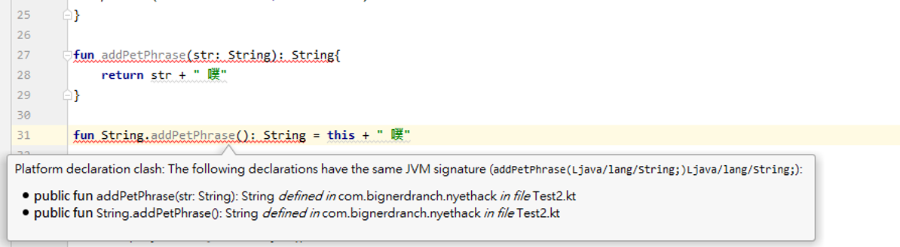

Ch.18 擴展
Ch.18 Extensions
Kotlin 提供一種可以替類別新增函式或屬性的管道-擴展 (Extensions)。當串接一個無法擅自更改的第三方類別，又希望能客製化一些函式或屬性時，Extensions
就顯得特別有用。
事實上，kotlin-stdlib 中經常用到 Extensions，如同先前提到的第九章所有的函式都屬於擴展函式 (Extension function)。
宣告的方式很簡單，如同以往的寫出想要的函式，然後在函式的名稱前加上
想要擴展的類別.
舉個例子，比如說豬太郎每次說話的時候尾句都會加上"噗"，把這個功能實現的時候應該是這樣
- fun addPetPhrase(str: String): String{
- }
但我想要讓這個函式屬於 String 類別，於是我使出了 Kotlin Extensions
-
- fun String.addPetPhrase(): String{
- }
欸欸欸，等等，這是不是似曾相識? 是不是跟第九章的 Scope functions 長得有點像? 沒有錯，之前介紹的 apply、also、with...都是 extension
functions
這邊的 Receiver 是被接在具名函式，之前介紹的是接在 lambda 或 匿名函式上
- fun String.addPetPhrase():
String {
- }
|
- val addPetPhrase : String.()-> String =
{
- }
|
上面那兩句是等效的，只是使用時機上的差別，具名函式做為 extension function 使用；而 function literals with receiver
常作為參數或返回值使用。
為擴展函數命名時，需要格外注意是否有名稱已被使用過。同樣的情況如果在 String 這個類別裡面已經有同個名稱且引用同樣的參數的函式，會優先使用既存的函式。
但如果是在同一個文件裡跟 Kotlin-stdlib 裡的擴展函式撞名的話，會優先使用我們自己定義的函式。
Kotlin 神奇的魔法
打開 IDE 把 Java 反編譯檔拿來審視了一番，其實 Kotlin 並不能真的修改類別把東西加進去，只是定義了一個跟這個類別有點關係的靜態函式讓他看起來屬於這個類別。
- public static final void addPetPhrase(@NotNull String $this$addPetPhrase) {
- Intrinsics.checkParameterIsNotNull($this$addPetPhrase,
"$this$addPetPhrase");
- String var1 = $this$addPetPhrase+ " 噗";
- boolean var2 = false;
- System.out.println(var1);
- }
因此下面兩個函式如果同時出現，則會出現 same JVM signature error。

繼承關係下的 Extension function
需要注意的是， 變數在尋找 Extension function 時是根據變數宣告的類別來去找相關函式，而不管實際上他的實作是甚麼型別，甚麼意思呢? 看到下面的例子，在宣告的時候
student1 明示他就是豬太郎，而 student2 只有說他是3年4班的學生。我們在兩個類別分別加了同名的 Extension function ，看看他們是否輸出一樣的句子。
- open class StudentIn304 {
- open fun whoAmI(): String = "我是三年四班的學生"
- }
- class Butarou : StudentIn304() {
- override fun whoAmI(): String = "我是豬太郎"
- fun String.addPetPhrase() = this + " 噗"
- }
- fun StudentIn304.sayHi() {
- println("${this.whoAmI()}, 今天我是值日生")
- }
- fun Butarou.sayHi() {
- println("${this.whoAmI()}, 今天我是值日生".addPetPhrase())
- }
- fun main() {
- val student1: Butarou = Butarou()
- val student2: StudentIn304 = Butarou()
- student1.sayHi()
- student2.sayHi()
- }
- 可以看到 student2 是去找 StudentIn304 的 extension
funciton
Extension function 是可以被繼承的
上述的例子，感覺起來太零散，現在我們把 sayHi() 加到一個 Classes 這個類別中，並加上 open 關鍵字讓他可以被繼承。
- open class StudentIn304 {
- open fun whoAmI(): String =
"我是三年四班的學生"
- }
- class Butarou : StudentIn304() {
- override fun whoAmI(): String =
"我是豬太郎"
- fun String.addPetPhrase() = this + " 噗"
- }
- open class Classes{
- open fun StudentIn304.sayHi(){
- println("${ whoAmI() }, 今天我是值日生")
- }
- open fun Butarou.sayHi(){
- println("${ whoAmI() },
今天我是值日生".addPetPhrase())
- this@Classes.whoAmI()
- }
- fun saySomthing(s: StudentIn304){
- }
- }
- 如果恰巧 Classes 類別中也有同名方法 whoAmI() ，Extension
function 所呼叫的 whoAmI() 還是以擴展的那個類別中的 whoAmI() 為主，此時我們稱該類別為 Extension receiver。如果想要呼叫
Classes 這個類裡的 whoAmI() 可以使用 this@Classes.whoAmI()
，此時 Classes 我們稱之為
dispatch receiver
- 將 Extension function 放進 Classes 裡之後，就剝奪了 top level funciton 的特性，main 方法中看不到
sayHi()，只有在宣告這個函式的類別自己看得到，因此在多加了一個 saySomthing() 讓外界也能使用。
創造一個 EnglishClass 繼承 Classes
- class EnglishClass : Classes(){
- override fun StudentIn304.sayHi() {
- println("${whoAmI()}, 我是英文小老師")
- }
- override fun Butarou.sayHi() {
- println("${whoAmI()}, 我是英文小老師".addPetPhrase())
- }
- }
- 要注意的是此例中 EnglishClass 沒有複寫 saySomthing() 這個方法，在使用的時候參數類別並不明顯，很容易在複雜的繼承關係中迷失方向。(豬太郎都沒有特色了 噗)
- fun main(){
- Classes().saySomthing(Butarou())
- EnglishClass().saySomthing(Butarou())
- EnglishClass().saySomthing(StudentIn304())